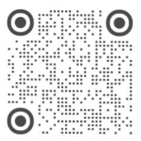

测量、机型适配、背景与设置问题的排查与反馈
CRuler 把屏幕当作尺子，刻度按屏幕物理尺寸换算，不使用相机。请先确认机型校准正确：
点工具栏「机型」→ 在「输入长边尺寸参数校正」输入屏幕物理长边（mm）→「确定」。 App 会用该值重新计算每毫米像素数。
长边指屏幕（不含边框）的竖屏高度，不是整机高度。可在厂商规格页或可信机型资料中 查屏幕尺寸；如不确定，请附机型与截图反馈。
工具栏「标记」开启 A/B 两点；拖动圆点，标签显示 cm / in / 寸（英文界面只显示 cm / in）。
「锁定」防止误触；「归零」把刻度起点复位；「设置 → 触感与音效 → 跟随滑杆滚动刻度」 可让刻度跟随左侧滑杆（默认关，需要先开启标记）。
App 内置 131 款机型；新机型、非 iPhone 或特殊版本可能无法自动识别。 在「机型」弹窗手动输入屏幕长边即可正常测量，不影响其他功能。
如果识别结果明显不符，请通过下方联系方式提供设备型号（如 iPhone17,2）、机型名称和屏幕参数， 后续版本可补充机型库。
App 会按当前屏幕的像素宽高比尝试匹配外屏/内屏档案；若当前屏幕识别错误， 请手动输入当前屏幕的长边尺寸。外屏与内屏的参数不同，不能共用同一组校准值。
开启「标记」后，A/B 两个圆点之间会出现距离标签；工具栏的「锁定」和「归零」分别用于 防止误触和恢复刻度起点。标记位置、锁定状态与工具栏显隐只在本次运行内有效， 不会写入本地存储。
打开「设置 → 弥散主题」：可选择预置主题或自定义调色，调整弥散强度、标尺颜色同步， 以及在日间 / 夜间 / 跟随系统之间切换。
打开「设置 → 自定义背景」：共 6 个槽位。点空槽会打开系统相册选择图片；点已填充槽位启用； 长按槽位可编辑或删除。编辑器支持双指缩放、单指拖动、双击复位，点「保存」应用。
「每天随机显示图片」会从已保存的槽位中随机选择。图片背景与弥散主题互斥， 选择弥散主题会退出图片背景。图片只在本机处理，不会上传。
界面语言跟随系统设置，在简体中文 / 香港繁体中文 / 英文之间自动切换； App 内没有语言开关。也可以在 iOS 设置 → App → CRuler → 语言中单独指定。 切换语言后系统会重启 App。
打开「设置 → 触感与音效」，可分别关闭触感反馈和拟物音效，并在 3 种音色中选择。 音效仅用于播放，不录音、不使用麦克风。
不会。设置和自定义背景只保存在本机；App 无需账号，自身不发起网络请求，也不含第三方 SDK。 删除 App 会清除本地数据；如开启了 iCloud 或电脑备份，历史备份中的 App 数据可能仍由系统保留。 详情见 隐私政策。
需要 iOS 17 或更高版本；面向 iPhone（横屏为主；iPhone Duo 内屏支持竖屏）。 iPad 目前未适配。

工作时间：每周一～周五；周末及法定节假日休息。
微信可扫码或搜索 dragonc_btfx；小红书可扫码或搜索 就这么Cat。 添加微信时请备注「CRuler 支持」。
反馈时请附上：
提交前请先阅读上面的常见问题，通常能更快解决。
隐私政策：CRuler 隐私政策
CRuler uses the screen as a ruler. The scale is derived from the screen's physical size, not the camera. First check that the device calibration is correct:
Tap Device in the toolbar, enter the screen's physical long edge in mm under "Calibrate", and tap OK. The app recalculates pixels per millimeter.
The long edge is the portrait height of the screen (excluding bezels), not the height of the whole phone. Check the manufacturer's specifications or a reliable device database. If you are unsure, send us the model and a screenshot.
Turn on Markers in the toolbar to show points A and B. Drag the dots; the label shows cm / in / 寸 (English UI shows cm / in only).
Lock prevents accidental touches; Reset returns the scale to its origin. "Scroll with slider" under Settings → Haptics & Sound makes the scale follow the left marker (off by default; markers must be on).
The app includes 131 models. New models, non-iPhones, and some regional variants may not be detected. Enter the screen long edge manually under Device; all other features keep working.
If the result is clearly wrong, send us the device identifier (for example iPhone17,2), model name, and screen specifications via the contact details below so we can add it to a future catalog.
The app tries to match the outer or inner display profile from the current screen's pixel aspect ratio. If the active screen is misidentified, enter that screen's long edge manually. Outer and inner screens have different parameters and cannot share one calibration.
After turning on Markers, a distance label appears between points A and B. Lock prevents accidental touches and Reset returns the scale to its origin. Marker positions, lock state, and toolbar visibility last for the current session only and are not stored locally.
Open Settings → Theme. Choose a preset or custom palette, adjust the diffuse intensity, enable ruler color sync, and switch between day, night, and system appearance.
Open Settings → Background. There are 6 slots. Tap an empty slot to open the system photo picker; tap a filled slot to enable it; long-press a slot to edit or delete it. The editor supports pinch-to-zoom, drag-to-move, and double-tap-to-reset; tap Save to apply.
"Randomize daily" picks from the saved slots. Photo backgrounds and the diffuse theme are mutually exclusive; selecting a diffuse theme exits photo mode. Images are processed only on your device and are never uploaded.
The interface follows your system language and switches automatically between Simplified Chinese, Hong Kong Traditional Chinese, and English. There is no in-app language switch. You may also set a language for CRuler in iOS Settings → Apps → CRuler → Language. Changing the language restarts the app.
Open Settings → Haptics & Sound. You can disable haptics and sound independently and choose from 3 sound styles. Sound is played back only; the app does not record audio or use the microphone.
No. Settings and custom backgrounds stay on your device. The app requires no account, makes no network requests itself, and contains no third-party SDKs. Deleting the app removes local data; if iCloud or computer backups are enabled, app data in historical backups may still be retained by the system. See the Privacy Policy for details.
iOS 17 or later, designed for iPhone (primarily landscape; iPhone Duo inner screen supports portrait). iPad is not currently supported.
Email: yjworks@foxmail.com
Hours: Monday–Friday; closed on weekends and public holidays.
Scan the WeChat or Xiaohongshu code, or search for the IDs above. When adding WeChat, please mention "CRuler support".
Please include:
Reading the FAQ above first usually resolves the issue faster.
Privacy: CRuler Privacy Policy